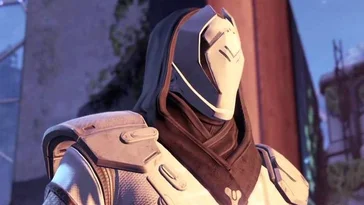

CAMPAGNE COMPLÈTE
Attention!
La section ci-dessous décrit l'intégralité de la campagne de Destiny. Êtes-vous sûr de vouloir continuer ?
Mais avant que vous ne puissiez faire quoi que ce soit, des
Déchus
 Dans un lointain passé, les Déchus étaient un peuple fier et noble, réparti en grandes maisons réputées pour leurs
techniques de combat. Ils ont manifestement perdu leur gloire d'antan, et sont aujourd'hui un peuple de pirates
arpentant les systèmes stellaires en quête de pillages.
Dans un lointain passé, les Déchus étaient un peuple fier et noble, réparti en grandes maisons réputées pour leurs
techniques de combat. Ils ont manifestement perdu leur gloire d'antan, et sont aujourd'hui un peuple de pirates
arpentant les systèmes stellaires en quête de pillages.
Ennemis: les Déchus
vous prennent pour cible. Votre Spectre vous annonce que vous êtes en plein milieu de leur territoire, et qu'il vaudrait mieux
fuir.
Votre Spectre vous montre une brèche à travers un gigantesque mur, et vous dit que vous pourriez peut-être trouver
une sortie en passant à travers.
Une fois à l'intérieur, vous ne voyez rien. Votre Spectre allume les lumières, et vous constatez que cet endroit est envahi par
les Déchus. En continuant un peu dans le mur, vous trouvez un vieux fusil, et vous vous empressez de le récupérer pour éliminer
les Déchus se dressant devant vous.
Après quelques instants à lutter contre ces pirates de l'espace, vous sortez du mur, et entrez dans un
Cosmodrome. Votre Spectre vous informe que vous devriez sûrement trouver quelque chose pour vous échapper de
cet endroit.
Vous trouvez un hangar avec un vaisseau interstellaire, et votre Spectre vous raconte que cela fait longtemps qu'il est ici.
Votre Spectre peut le faire fonctionner, mais vous vous faites intercepter par une équipe de Déchus, ainsi qu'un Capitaine
du nom de Rahn.
Une fois cette éliminée, le vaisseau démarre, mais votre Spectre vous annonce que ce dernier ne pourra pas aller en orbite. Mais
il pourra vous emmener dans un endroit ou vous serez en sécurité: la Dernière Cité, dernier bastion de
l'humanité, et le dernier endroit que le Voyageur peut protéger.
Vous arrivez à la Tour, le Quartier Général de la Dernière Cité, et lieu de résidence des Gardiens. Vous rencontrez rapidement le
Guide

Le Guide agit comme un conseiller et un mentor pour les Gardiens. Il est dit que le Voyageur parle avec le Guide,
et qu'il est capable de parler avec ce dernier. En réalité, le Voyageur ne communique avec le Guide qu'à travers des rêves,
qu'il doit correctement interpréter avant de partager ses rêves avec la Dernière Cité.
.
Après avoir fait connaissance, le Guide vous informe que la
Ruche
 La Ruche serait l'une des races aliens les plus anciennes et auraient été maintenues en vie par d'anciennes magies
oubliées. Ils s'installent au plus profond des planètes, crééent d'immenses réseaux de grottes sans se soucier des dégâts
causés.
La Ruche serait l'une des races aliens les plus anciennes et auraient été maintenues en vie par d'anciennes magies
oubliées. Ils s'installent au plus profond des planètes, crééent d'immenses réseaux de grottes sans se soucier des dégâts
causés.
Ennemis: la Ruche
,
qui a tué d'inombrables Gardiens sur la Lune, est de retour pour envahir la Dernière Cité.
Vous vous rendez donc sur la Lune, votre première destination, pour enquêter sur la Ruche.
Lors de votre enquête, vous recevez un message urgent qui vous indique que la Ruche essaie de vider le Voyageur de sa Lumière
et qu'il faut les arrêter à tout prix.
Cependant, vous rencontrez une mystérieuse inconnue, qui vous demande de vous rendre sur Vénus pour arrêter une
autre menace...
Après avoir interrompu un rituel de la Ruche sur la Lune, vous vous rendez sur Vénus suite à la demande de la mystérieuse
inconnue. Une fois arrivés sur Vénus, vous rencontrez rapidement les Vex, une race de machines décidées
à dominer la réalité elle-même.
L'inconnue vous informe que la seule manière de vaincre les Vex et de sauver le Voyageur est d'entrer dans le
Jardin Noir
Le Jardin Noir est un royaume de Ténèbres, isolé hors du temps et de l'espace.
On raconte que cet endroit serait le lieu de naissance des Vex. Nous ne savons quasiment rien à propos du Jardin Noir,
mais il semble bien gardé par les Sol Reclus. Peu de Gardiens osent s'aventurer dans la Jardin Noir,
et encore moins arrivent à ressortir en vie.
,
considéré comme le lieu de naissance des Vex.
Pour se faire, vous demandez conseil aux Eveillés du Récif, et leur reine Mara Sov
vous indique que vous avez besoin de l'oeil d'un
Maître des Clés
Les Maîtres des Clés ont un rang spécial dans la hiérarchie Vex. Ce sont des Minotaures ayant pour objectif de garder
les lieux d'intérêt Vex (comme le Jardin Noir, par exemple) hors du temps et de l'espace, ainsi que de protéger les
portails menant à ces lieux d'intérêt.
,
un des gardiens du portail menant au Jardin Noir.
Après avoir récupéré l'oeil, Mara Sov vous donne plusieurs informations concernant le Jardin Noir. Vous apprenez qu'il
se situe sur Mars, mais malheureusement, vous apprenez aussi qu'il se situe derrière d'épaisses défenses Cabales.
Grâce à l'oeil du Maître des Clés, vous entrez dans le Jardin Noir, un étrange royaume Vex situé hors de l'espace et du temps.
En son centre se situe le Coeur Noir, une abomination que les Vex vénèrent et cherchent à utiliser pour
plier la réalité à leur volonté.
Après un combat acharné, vous réussissez à détruire le Coeur Noir et à sauver le Voyageur. Mais ce n'est pas encore terminé.
L'inconnue vous informe que si vous voulez vous débarrasser des Vex pour de bon, il vous faudra pénétrer le
légendaire Caveau de Verre, une forteresse Vex située sur Vénus, qui semble être la source de leurs pouvoirs.